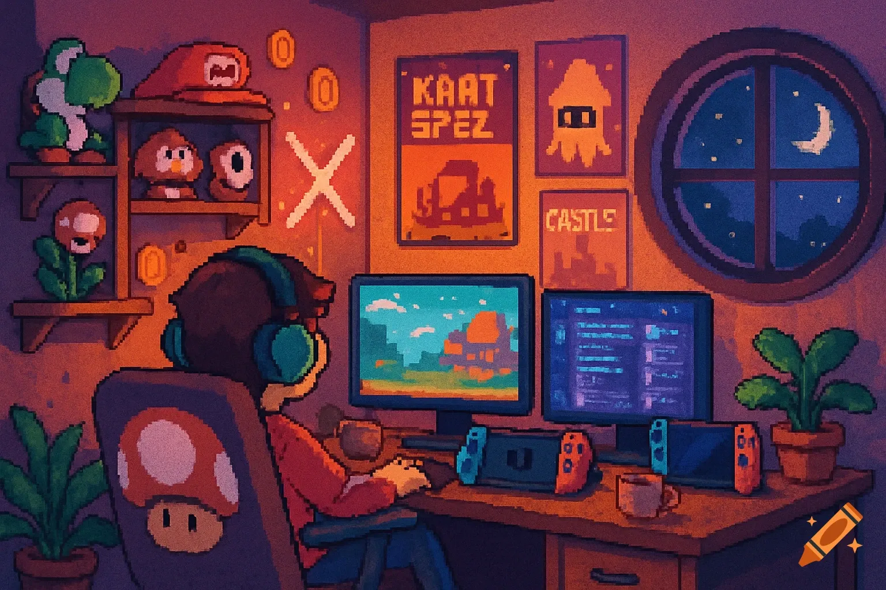

About Me

Network Technician | IT | Programmer | Sys Admin | Security Analyst
Experienced in IT with a strong background in programming, IT repair, networking, and cyber security. With several years of combined professional and freelance experience in the IT industry, I am dedicated to continuously expanding my knowledge and skills.Currently preparing for the Security+ exam, I am passionate about cyber security and enjoy educating others about technology. I have a particular interest in participating in Capture the Flag (CTF) competitions, honing my skills in real-world scenarios.My career goal is to work in an environment that fosters constant learning and provides exposure to diverse technologies. Beyond my professional pursuits, I enjoy building computers for fun and recently begun exploring the world of 3D printing.What sets me apart is my unwavering discipline and drive to learn. I thrive on challenges and possess a tenacity to find solutions even in the face of unfamiliar problems. Let's connect and explore opportunities to collaborate in the dynamic world of IT.